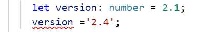

Los lenguajes con tipado estático permiten detectar errores de asignación en tiempo de desarrollo.
Por ejemplo si tenemos la definición de una variable 'number' y luego queremos asignarle un 'string' la herramienta de desarrollo la puede detectar (también si lo compilamos nos detecta un error):
JavaScript es un lenguaje de programación que usa un tipado dinámico, luego la comprobación de tipificación se realiza durante su ejecución en vez de durante la compilación.
Permite almacenar tanto valores enteros como reales.
let edad: number = 23; let altura: number = 1.92;
Si inicializamos la variable inmediatamente podemos dejar que TypeScript infiera el tipo de dato, es decir es lo mismo que escribir:
let edad = 23; let altura = 1.92;
Permite almacenar una cadena de caracteres:
let estudios:string = 'primarios';
Podemos almacenar entre las comillas cualquier caracter.
Podemos almacenar el valor true o false:
let activo: boolean = true;
Podemos almacenar un conjunto de elementos del mismo tipo mediante vectores o arreglos:
let vector: number[] = [1, 4, 2];
vector.push(33);
for(let elemento of vector)
console.log(elemento);
Indicamos luego del tipo de dato los corchetes abiertos y cerrados:
let vector: number[]
Si queremos definir e inicializar algunas componentes del arreglo luego la sintaxis es:
let vector: number[] = [1, 4, 2];
El compilador de TypeScript nos podrá avisar del error si queremos agregar componentes que no sean de tipo 'number':
vector.push('juan'); //error
Otra sintaxis para definir un arreglo en TypeScript es mediante genéricos utilizando la clase Array:
let vector: Array<number> = [1, 4, 2];
vector.push(33);
for(let elemento of vector)
console.log(elemento);
El tipo de dato enum permite hacer nuestro código más legible:
enum Operacion {Suma, Resta, Multiplicacion, Division};
let actual: Operacion = Operacion.Multiplicacion;
switch (actual) {
case Operacion.Suma: {
console.log('Operación actual: Suma ');
break;
}
case Operacion.Resta: {
console.log('Operación actual: Resta ');
break;
}
case Operacion.Multiplicacion: {
console.log('Operación actual: Multiplicacion ');
break;
}
case Operacion.Division: {
console.log('Operación actual: Division ');
break;
}
}
Estamos declarando un nuevo tipo de dato que puede almacenar alguno de los cuatro valores indicados entre llaves:
enum Operacion {Suma, Resta, Multiplicacion, Division};
Luego podemos definir una variable de este tipo y almacenar uno de esos cuatro valores:
let actual: Operacion = Operacion.Multiplicacion;
Cuando queremos saber que valor almacena la variable 'actual' la comparamos por ejemplo con los valores posibles del tipo 'Operacion':
switch (actual) {
case Operacion.Suma: {
console.log('Operación actual: Suma ');
break;
}
case Operacion.Resta: {
console.log('Operación actual: Resta ');
break;
}
case Operacion.Multiplicacion: {
console.log('Operación actual: Multiplicacion ');
break;
}
case Operacion.Division: {
console.log('Operación actual: Division ');
break;
}
}
Es una forma más elegante que tratar de resolver el problema con una variable de tipo 'number':
let actual: number = 0; //0 = suma / 1 = resta / 2 = multiplicacion / 3 = division
switch (actual) {
case 0: {
console.log('Operación actual: Suma ');
break;
}
case 1: {
console.log('Operación actual: Resta ');
break;
}
case 2: {
console.log('Operación actual: Multiplicacion ');
break;
}
case 3: {
console.log('Operación actual: Division ');
break;
}
}
En las situaciones que debemos almacenar un dato en una variable y no sabemos de antemano que tipo se trata, TypeScript incorpora el tipo 'any'.
Es un tipo de dato que debemos evitarlo en lo posible ya que el compilador no nos puede ayudar y debemos esperar a ejecutar el programa para identificar errores.
Cuando utilizamos librerías heredadas de JavaScript es muy posible que nos veamos obligados a utilizar este tipo de dato.
let dato: any;
dato = 10;
console.log(dato);
dato = 'Hola';
console.log(dato);
dato = true;
console.log(dato);
dato = [1,2,3];
console.log(dato);
La variable dato muta su tipo a lo largo de la ejecución del algoritmo, primero es number, luego string, boolean y finalmente de tipo Array.
Podemos definir un Array con elementos de distinto tipo:
let vec: any[] = [10, 'Inicio', true];
También cuando definimos funciones o métodos debemos definir el tipo de dato de los mismos:
mayor(valor1: number, valor2: number): number {
if (valor1 > valor2)
return valor1;
else
return valor2;
}
El método mayor recibe dos parámetros de tipo 'number' y retorna un tipo de dato 'number' que lo indicamos luego de los dos puntos.
Si no retorna dato un método podemos utilizar el tipo 'void':
export class AppComponent {
constructor() {
this.mostrarMensaje('Hola mundo');
}
mostrarMensaje(mensaje: string): void {
alert(mensaje);
}
}
TypeScript permite definir variables que almacenen dos o más tipos de datos. Puede almacenar un único valor en un determinado momento, pero dicho valor puede variar entre los tipos indicados en la definición:
let edad: number | string; edad=34; console.log(edad); edad='20 años'; console.log(edad);
Mediante el caracter | separamos los tipos posibles de datos que puede almacenar la variable. La variable 'edad' puede almacenar un valor de tipo 'number' o 'string':
let edad: number | string;